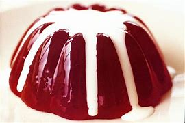
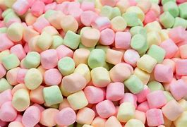

| Almonds | Dragon Fruit | Jelly | Marshmallow |
along with other nuts and seeds, may help improve lipid, or fat, levels in the blood. This can benefit heart health.

s a tropical fruit that is low in calories and high in fiber and antioxidants. Some people say it tastes like a cross between a pear and a kiwi.
Gelatin dessert in China is defined as edible jelly-like food prepared from a mixture of water, sugar and gelling agent.
is a confectionery made from sugar, water and gelatin whipped to a solid-but-soft consistency. It is used as a filling in baking or molded into shapes and coated with corn starch.